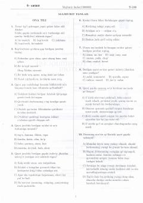

92Oliy ta'lim muassasalariga kirish uchun majburiy fanlar bo'yicha testlar to'plami.
Ushbu to'plam 2021-yilgi oliy ta'lim muassasalariga kirish imtihonlari uchun mo'ljallangan majburiy fanlar test variantlarini o'z ichiga oladi. Unda ona tili va O'zbekiston tarixi fanlari bo'yicha savollar hamda ularning tahlili keltirilgan.